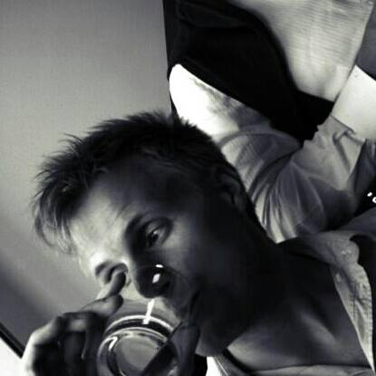
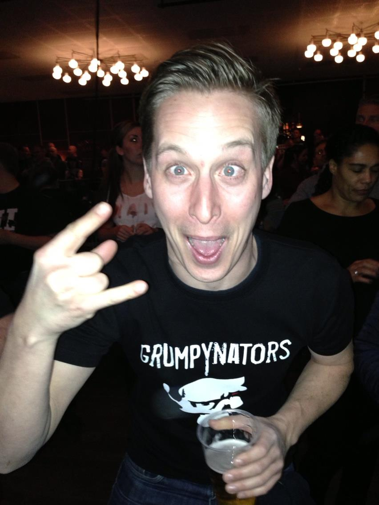
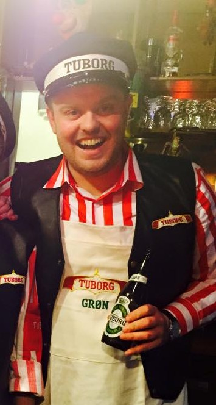
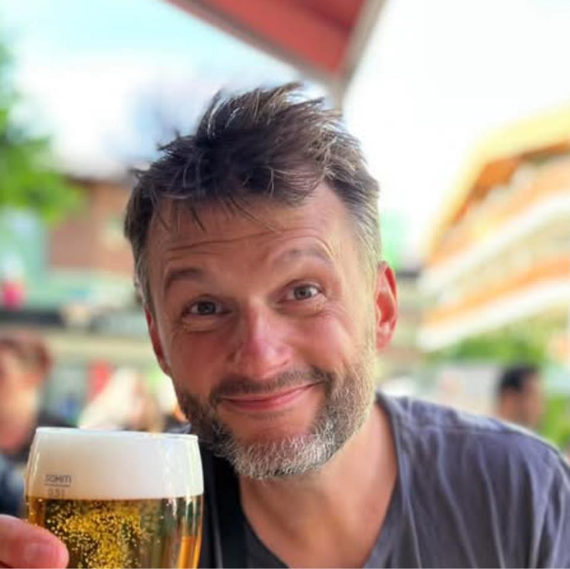
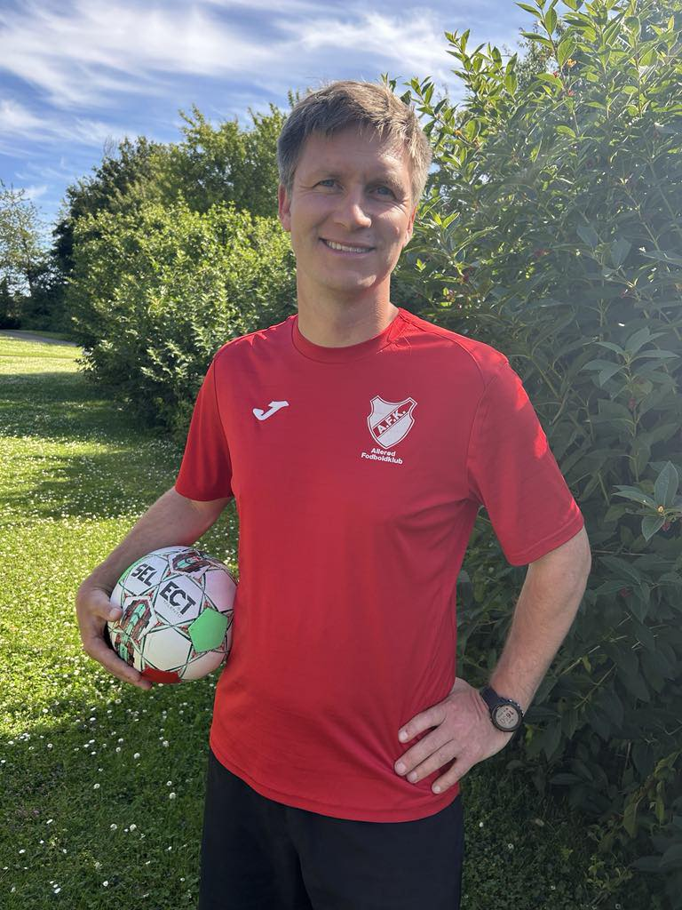

Balling
Mr. grundig og Mr. safe, men med en forkærlighed for Bayern München og en sikker hjemmesejr. Mon ikke Balling har rekord for færrest bøder?
Mr. safe7 gutter, 2 bets, bøder og evig optimisme. Her er holdet bag Tipsklubben anno feb 22.
Balling
Mr. grundig og Mr. safe, men med en forkærlighed for Bayern München og en sikker hjemmesejr. Mon ikke Balling har rekord for færrest bøder?
Mr. safeFolde
Tipperen der nogle gange hopper ned i rækkerne i England – og ikke er bange for at tage et italiensk bet.
England + Italien
Franke
Glad for QPR (klogt) – og har fundet kærligheden for “Begge hold scorer” sent i sin karriere.
BTTS
Tobias
Hvis Balling var Mr. safe, så er Tobias Mr. safe med livrem og seler. Sjældent ses et odds over 1,40 – men til gengæld garant for gevinster i ny og næ.
1.40-max
Madsen
Vores øl-konge. Aldrig bleg for at spille med hjertet (Man U og FCK), men ofte velovervejede bets.
Øl-kongen
Martin
Mr. all over the place – spiller desværre oftest med hjertet: Man U og FCK + lidt QPR.
All over
Trygve
Vores allesammens loose cannon – men vi ville ikke undvære ham: det er sjovt, og når han rammer, så rammer han big time!
Loose cannon